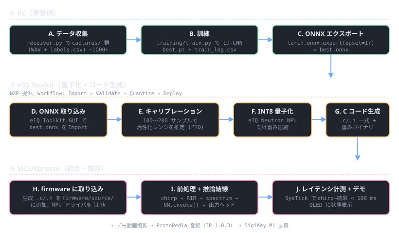

注意 — 本ページは設計初期の手順書、現状は v12345 で実デプロイ完了済:
本ページのコード例は 6-head 混合 (any_open / door_AB / door_BC / window_a/b/c) 時代のもの。
現在の本番モデルは 14-class + 32-class 両 head の Neutron 互換 XL アーキ
(
model_32cls_neutron.py, ~104K params) で、MCU 実機上で
1.89 ms / NPU 比率 100% / 14cls 100% / 32cls 100% を達成。
実デプロイの現状と成果物は
v12345 検証レポート および
10_inference firmware README を参照。
実モデルバイナリは firmware/projects/10_inference/source/model_data.h。
本ページに残る 6-head 関連の記述は手順理解の参考としてのみ有効。
全体フロー

3 レーンに分かれる: PC（訓練・エクスポート） → eIQ Toolkit（量子化・コード生成） → MCUXpresso（統合・推論）。 各レーンはツールチェインが違うので、レーン間の引き渡しファイルが レーン同士のインターフェースになる。
0. ツール導入方法
| ツール | 入手先 | 用途 | 導入確認コマンド |
|---|---|---|---|
| PyTorch / ONNX | conda env create -f pc/environment.yml |
訓練 + ONNX エクスポート | python -c "import torch, onnx; print(torch.__version__, onnx.__version__)" |
| eIQ Toolkit | NXP 公式（無償、要 NXP アカウント） | INT8 量子化 + Neutron NPU 用 C コード生成 | インストール後 eIQ Toolkit アプリ起動でバージョン確認 |
| MCUXpresso IDE | NXP 公式（無償） | MCXN947 ファーム開発・書込 | Help > About で IDE バージョン（11.9 以降推奨） |
| MCUXpresso SDK | IDE 内 SDK Builder で frdmmcxn947 選択 |
SAI / NPU / PowerQuad ドライバ | IDE Installed SDKs にツリーが現れる |
| onnxruntime | environment.yml 内 |
量子化前後の精度比較（PC 上） | python -c "import onnxruntime; print(onnxruntime.__version__)" |
eIQ Toolkit のバージョン: Neutron NPU 対応は 1.8 以降。古いバージョンでは MCXN947 用 C コード生成のターゲットが選べない。インストール後最初に
Help → Check for Updates。
1. PC レーン — 学習 + ONNX エクスポート
1.1 訓練
cd pc
conda activate ichiping
# captures/ は receiver.py / emulator.py で作ったディレクトリ
python -m training.train --captures ../captures --out ../runs/v1_pilot --epochs 50
出力:
runs/v1_pilot/best.pt | PyTorch チェックポイント（state_dict + cfg） |
|---|---|
runs/v1_pilot/best.onnx | ONNX opset 17 — eIQ Toolkit への入力 |
runs/v1_pilot/train_log.csv | per-epoch loss / val_acc(any_open) |
runs/v1_pilot/config.json | 再現用メタ（CLI 引数 + モデル構成） |
1.2 ONNX 検証（量子化前）
python -c "
import onnxruntime as ort
import numpy as np
sess = ort.InferenceSession('runs/v1_pilot/best.onnx')
x = np.random.randn(1, 1024).astype(np.float32)
out = sess.run(None, {'spectrum': x})
for name, v in zip([o.name for o in sess.get_outputs()], out):
print(name, v.shape, v.dtype)
"6 つの出力（any_open / door_AB / door_BC / window_a/b/c）が想定形で返れば OK。
2. eIQ Toolkit レーン — 量子化 + コード生成
2.1 プロジェクト作成
- eIQ Toolkit GUI を起動 →
New Project - Target を
MCXN947 (Neutron NPU)に設定 Import Modelでruns/v1_pilot/best.onnxを選択
2.2 キャリブレーションデータの用意
PTQ（Post-Training Quantisation）には活性化レンジを推定するための代表サンプルが必要。訓練データから 100〜200 個を選んで NumPy 配列に保存:
# pc/training/export_calibration.py（参考スニペット）
import numpy as np
from torch.utils.data import DataLoader
from training.dataset import IchiPingDataset, collate_targets
ds = IchiPingDataset("../captures")
loader = DataLoader(ds, batch_size=200, shuffle=True, collate_fn=collate_targets)
x, _ = next(iter(loader))
np.save("../runs/v1_pilot/calib.npy", x.numpy())
eIQ Toolkit GUI で Calibration Dataset として calib.npy を指定。
2.3 量子化と精度確認
Quantizeボタン → INT8 / per-channel weights / per-tensor activations を選択- 量子化前後の各ヘッド出力を eIQ Toolkit の Validation タブで比較。
any_openの精度が 2% 以内に収まることが 採用条件 - 収まらなければ:
- キャリブレーションサンプルを増やす（200 → 500）
- QAT（Quantisation-Aware Training）に切り替え（PC レーンの train.py に
torch.ao.quantization.prepare_qatを追加）
2.4 C コード生成
Deploy ボタン → Neutron NPU C Code を選択。生成物:
ichiping_v1_model.c / .h | ネットワーク構造 + invoke 関数 |
|---|---|
ichiping_v1_weights.c | INT8 量子化重みのバイナリ埋め込み |
ichiping_v1_inference.c | 前処理・後処理ヘルパ（テンソルの S/H スケール変換含む） |
3. MCU レーン — firmware への統合
3.1 ソース追加
firmware/source/
├── ichiping_v1_model.c ← eIQ から
├── ichiping_v1_weights.c ← eIQ から
├── ichiping_v1_inference.c ← eIQ から
├── ichiping_v1.h ← eIQ から（include/ に置く）
├── feature_extract.c ← ★ 新規: PowerQuad-FFT で 1024-bin spectrum
└── main_v1.c ← ★ 新規: chirp 放射 + 録音 + 推論 + 表示
3.2 リンカ設定
NXP eIQ Neutron NPU ランタイムをリンク（MCUXpresso SDK 11.9+ に同梱）:
# Properties → C/C++ Build → Settings → MCU Linker → Libraries
-leiq_neutron
-leiq_runtime
3.3 推論結線コード骨子
#include "ichiping_v1.h"
#include "feature_extract.h"
static int16_t audio_buf[ICHP_SAMPLE_COUNT];
static float spectrum[1024];
static float nn_out[ICHP_V1_OUTPUT_SIZE];
void inference_cycle(void) {
// 1. chirp 放射 + 録音（v0.2 でできる）
sai_emit_chirp_and_record(audio_buf);
// 2. 特徴抽出: 整合フィルタ + RIR 窓 + rFFT + log-mag
feature_extract(audio_buf, ICHP_SAMPLE_COUNT, spectrum);
// 3. NN 推論（NPU）
eiq_status_t st = ichiping_v1_invoke(spectrum, nn_out);
if (st != EIQ_OK) { /* fallback */ }
// 4. 結果デコード
float p_any_open = sigmoid(nn_out[OUT_ANY_OPEN]);
int door_BC = argmax3(&nn_out[OUT_DOOR_BC]);
// ... OLED 表示 / UART 送信
}
3.4 レイテンシ計測
uint32_t t0 = SysTick->VAL;
ichiping_v1_invoke(spectrum, nn_out);
uint32_t t1 = SysTick->VAL;
uint32_t cycles = t0 - t1; // SysTick はカウントダウン
printf("invoke: %u cycles (~%.2f ms)\\n",
cycles, cycles * 1000.0f / SystemCoreClock);
目標: 1 ms 以内。特徴抽出（PowerQuad FFT）+ NN invoke + 後処理で 50 ms 程度。
chirp 放射 + 録音 (2 秒) が支配的なので、全体は ~3 秒/推論（model のせいではない）。
4. 失敗パターンとリカバリ
| 症状 | 原因の候補 | 確認 / 対処 |
|---|---|---|
INT8 量子化後に any_open の acc が 10%+ 低下 |
活性化レンジが狭すぎる / キャリブレーションデータが偏る | キャリブレを 500 サンプルに増やす → ダメなら QAT |
| eIQ Toolkit が ONNX を import できない | opset 不一致 / 未対応オペ（GroupNorm 等） | train.py の opset_version=17 確認、未対応オペ使わない |
MCU 側で ichiping_v1_invoke が EIQ_OOM |
テンソル領域がスタックに置かれ overflow | 静的グローバル領域に移す。リンカで .bss.eiq セクション確保 |
| PowerQuad FFT 結果が numpy と異なる | 窓関数違い / endian / スケーリング差 | features.py に合わせて窓無し、log10 + 同じ正規化、テストベクタで突合 |
5. 関連タスク
| タスク | ステータス |
|---|---|
| IP-0.5.1 PyTorch 訓練（足場あり） | 足場完成 |
| IP-0.5.2 ONNX → eIQ → INT8 → C コード生成 | 本ページ §2 |
| IP-0.5.3 MCU 統合 + レイテンシ計測 | 本ページ §3 |
| IP-0.3.2 PowerQuad FFT ラッパ | 推論前に必要 |